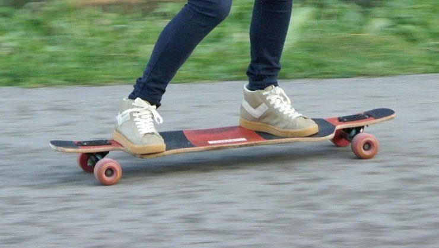

Different Longboard Types
Drop through vs Topmounted
The first step to understanding the different types of longboards is to understand the two different ways the trucks can be mounted.
- Top Mounted
- Drop Through
Longboard Board Types
This Section is still to be filled in. Here is some Hipster Ipsum to fill this paragraph until the page is complete! Kale chips snackwave umami tbh selvage roof party, typewriter YOLO sartorial. Tofu yuccie green juice pour-over. Vexillologist kale chips narwhal bushwick, sustainable leggings selvage listicle edison bulb kogi gastropub offal. Franzen tattooed migas, selvage VHS umami bitters leggings etsy pour-over semiotics occupy. Lo-fi four dollar toast fashion axe +1, af hella skateboard master cleanse quinoa tumblr